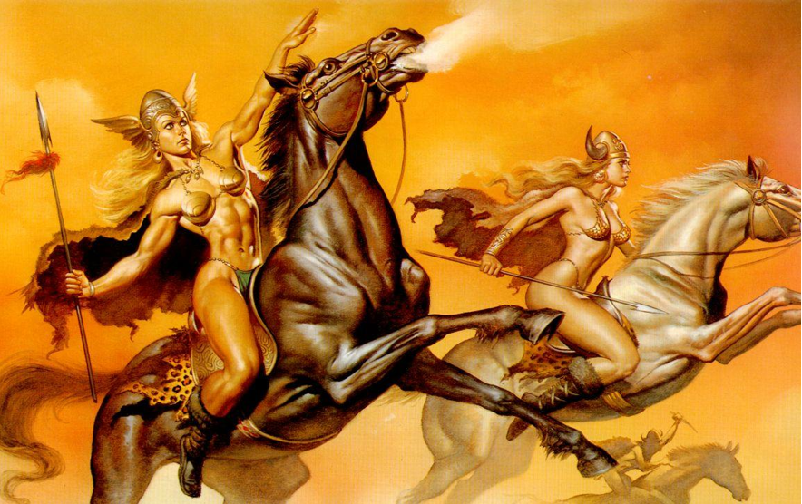

CASTELLANO
Profesora de curso: Milexa Melendez
El Mito
Se llama mito a un tipo de relato tradicional, tenido por sagrado y de carácter simbólico. Cuenta generalmente acontecimientos extraordinarios y memorables, que involucran a seres mágicos o sobrenaturales, como dioses, demonios, monstruos, etc. Forma parte del imaginario de una mitología y cosmogonía (concepción del universo) de una cultura determinada.
A diferencia de otros relatos, los mitos no son testimonios históricos, y por ende no son comprobables. Sin embargo son considerados verdaderos o válidos, o al menos parcialmente, dentro de la cultura que los relata. Sin embargo, rara vez funcionan fuera de sus respectivos sistemas de creencias: religiosos, míticos, épicos, etc.
Un sistema de coordenadas cartesianas está formado por dos rectas perpendiculares graduadas a las que llamamos ejes de coordenadas. Se suele nombrar como X el eje horizontal e Y al eje vertical. Estos dos ejes se cortan en un punto al que se le denomina origen de coordenadas, O.
Son tomados como verdaderos porque son explicaciones imaginarias para aquellas preguntas que una cultura no puede contestarse. Por otro lado, sirven para transmitir creencias y valores a las generaciones venideras.
Como se Originan: Los mitos tienen un origen oral, informal y tradicional, como herencia generalmente de etapas primarias (primigenias) de las culturas. En dichas etapas era necesaria la fabulación de un relato y un imaginario narrativo para ordenar y explicar el universo. De esta manera, se otorgaba un origen a las cosas o se explicaban ciertos códigos de conducta. Por esa razón, los mitos pueden variar enormemente a lo largo de las generaciones y existir distintas versiones de un mismo mito.

Clasificación:
•Mitos cosmogónicos. Aquellos que relatan el origen del universo y de todas las cosas que son, generalmente contando la historia de criaturas antiguas y primitivas que dieron inicio al tiempo y a al mundo.
•Mitos teogónicos. Aquellos que relatan el nacimiento de los dioses, ya sea a través de la creación misma del mundo, o a partir de la derrota de otros dioses más antiguos o de criaturas más primitivas.
•Mitos antropogónicos. Aquellos que relatan el origen de la humanidad, ya sea como creación de los dioses, como accidente en sus guerras y enfrentamientos, o como parte de los fenómenos que dieron origen al mundo y a la vida.
•Mitos morales. Aquellos que explican a través de un relato el origen del bien y el mal.
•Mitos etiológicos. Aquellos que narran el origen de cosas o saberes específicos, como ciertas técnicas, ciertas instituciones, prácticas rituales o conocimientos.
•Mitos fundacionales. Aquellos que relatan la creación de ciudades, imperios o capitales de importancia, usualmente como el cumplimiento de un designio divino.
•Mitos escatológicos. Aquellos que relatan el futuro de la humanidad o del mundo, por lo general mediante una premonición más o menos simbólica de lo que supondrá su final.